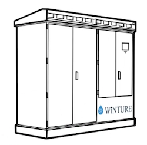
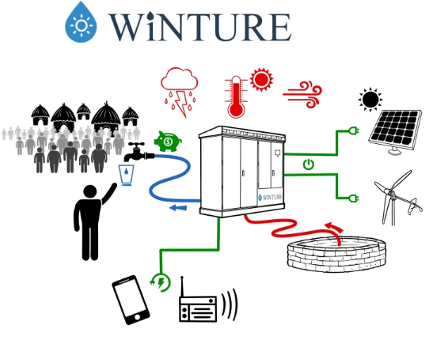

Lo que hacéis
Boreal Light es una empresa de ingeniería de energía renovable con sede en Berlín. Fabrica plantas solares que depuran y desalinizan agua, sin red y sin diésel.
«Committed to Sustainable and Social Business, Ensuring Access to Safe Drinking and Irrigation Water.»
Sencillez
Plantas en contenedor, listas para conectar y trabajar al aire libre.
Precio al alcance
En vuestras palabras: reducir un 90 % el coste de acceso al agua potable.
Sin red
Funcionan con energía solar. El agua llega donde no llega el cable.
Cita y cifras: boreallight.com, consultado el 14/11/2026. Pioneer Award 2025 de la Solar Impulse Foundation, categoría agua (misma fuente). España figura entre los países con operaciones en el perfil de la German Water Partnership.
Vídeo de fondo: Boreal Light GmbH en Vimeo.
Lo que ofrecen
Una familia de soluciones para que haya agua buena donde no llega la red. Cada dato, con su fuente.

PlanetCube · desalinización solar
Ósmosis inversa con energía solar, sin baterías ni inversor. De 1.000 a 40.000 L/h. Agua de mar, salobre o contaminada.
Fuente: WACEE
Para quién
Municipios, gobiernos, agencias de desarrollo, ONG, hoteles, hospitales, granjas e industria.
Fuente: German Water Partnership y boreallight.com
En marcha
Plantas de Boreal Light ya trabajando. Estas fotos son de la cooperación alemana con Ucrania: plantas construidas en Berlín para dar agua potable.


En la prensa
- Plantas solares de desalinización para el agua potable en Ucrania
Ministerio alemán de Cooperación (BMZ) - Una empresa alemana instala una planta de desalinización con fotovoltaica en Ucrania
pv magazine, 26/10/2023 - La desalinización sale de la red con el sol
Aquatech, 19/01/2023 - The Winture PlanetCube
WACEE, pabellón alemán
Quiénes somos
TeamTowers Humà: consultoría, formación y dinamización de grupos, desde el Penedès. La misma pregunta de siempre: cómo un grupo que no se ha elegido aguanta el peso junto.
Catálogo comercial de TeamTowers 2026, citado en teamtowershuma.com/qui-som.
Álvaro Solache
Psicólogo social. Más de veinte años formando equipos en empresas, universidades y administraciones. Su perfil.
El mapa de valor
Trabajamos con el método de Verna Allee: dibujar quién da qué a quién, también lo que no se factura. Qué es.
Formación acción
Formamos sobre un encargo real y cerramos con una evidencia, no con un certificado de asistencia. Los módulos.
Una red de proyectos
El SOS, un sistema abierto para comunidades. Events Penedès, eventos y experiencias en el territorio. Y una familia con ganas de invertir en lo que cuida.
Del agua, un ecosistema
Lo que más nos motiva es lo que aprendimos con vosotros: una planta de agua no es una máquina sola. A su alrededor crece una red.

Agua cada día
Un municipio, un hotel, una finca o una comunidad tiene agua buena. Y la sigue teniendo.
Saber que se queda
Una escuela del agua: formar a quien instala, a quien mantiene y a la comunidad que usa la planta.
Cuidado constante
Quien está cerca ve antes los problemas. Eso, con vuestra monitorización a distancia, mantiene cada planta viva.
Una historia que se cuenta
El agua recuperada es una historia. Bien contada, abre la puerta al siguiente sitio.
El flujo de valor
Lo dibujamos con el método de Verna Allee (Value Network Analysis): quién da qué a quién. Lo tangible, que se puede contratar. Y lo intangible, el saber y la confianza, que no se factura pero sostiene la red. Ponemos el foco en lo que llega a Boreal Light.
Lo que aportamos a Boreal Light
| Tipo | Qué | Cómo llega |
|---|---|---|
| T | Pedidos con la ficha del sitio y la analítica del agua completas | Directo, antes de cada oferta técnica |
| T | Web y materiales en castellano y catalán | Directo, con la marca como la queráis presentar |
| T | Obra y mantenimiento local, con un socio instalador cerca del sitio | A través del cliente |
| T | Proyectos maduros, listos para presentar a quien financia | A través del cliente |
| I | Lo que pide el mercado español y mediterráneo, y cómo se vende aquí | Directo |
| I | Saber qué zonas y qué normas del agua piden solución | De quien autoriza y controla el agua |
| I | Datos de cómo trabaja la planta en un clima nuevo | A través del cliente y la monitorización |
| I | La historia del agua recuperada: casos, visibilidad y reputación | De la gente que bebe y riega, y de quien recomienda |
| I | Técnicos y comunidades formados en la escuela del agua | Directo, y en cada sitio |
Lo que esperamos de Boreal Light
| Tipo | Qué |
|---|---|
| T | La planta y la oferta técnica de cada sitio |
| T | La garantía y la monitorización a distancia, para el cliente |
| I | La formación técnica y el acceso a vuestros casos de otros países |
| I | Vuestro permiso para presentar la marca en España |
T tangible: se entrega y se puede contratar. I intangible: saber, confianza o reputación.
Las cuatro etapas
La venta
De la primera recomendación al contrato firmado. Quien recomienda nos presenta a quien tiene el problema del agua.
La instalación
De la ficha del sitio al primer litro. Pedido a Berlín, permisos del agua, obra con el socio local.
La financiación
De la convocatoria a la ayuda cobrada. Proyectos listos cuando se abre la ventana.
La vida de la planta
El agua de cada día, el mantenimiento y lo que se cuenta. Es lo que trae el siguiente sitio.
Qué gana Boreal Light
Presencia sin abrir oficina
Una red local que vende, instala y cuida, sin que tengáis que montarla.
Ofertas con menos riesgo
Cada sitio llega estudiado: agua, consumo, distancias y permisos.
Plantas que siguen funcionando
El aviso temprano del instalador, sumado a vuestra monitorización, evita paradas.
Casos que se pueden visitar
Plantas cerca de Europa, con una historia contada, que abren la puerta a otros clientes.
Lo que comprobaremos juntos
- Las especificaciones de cada producto, confirmadas antes de ofertarlas.
- Las plantas de referencia que se pueden enseñar y visitar.
- La garantía, el servicio y cómo se reparte el mantenimiento.
- La normativa española del agua para cada uso.
- El socio instalador y su capacidad en la zona del primer piloto.
- La forma de trabajar juntos. Eso, en la conversación.
Mapa de valor de la red del agua solar en España, borrador de noviembre de 2026 (TeamTowers). Sin cifras: los importes no forman parte de esta vista.
Lo que proponemos
Ser vuestra representación en España. Como un proyecto de familia: con calma, invirtiendo en él y pensado para durar.
Hablar vuestro idioma aquí
Una web y materiales en castellano y catalán, con una ficha del sitio para pedir oferta: fuente del agua, consumo, distancias y si hay red o sol.
Encontrar el primer sitio
Un cliente real con un problema real de agua. Un piloto que se pueda visitar.
Un socio local que instale
Una ingeniería o instaladora de agua y solar, cerca del sitio, para la obra y el mantenimiento.
La escuela del agua
Formación para técnicos, instaladores y comunidades. Es lo que mejor sabemos hacer.
Cuidar y contar
Mantener cada planta y contar lo que cambia. Para que cada sitio traiga el siguiente.
Aquí no hay precios ni condiciones. Eso lo hablamos en persona, cuando sepamos qué queréis vosotros.
Crear juntos la sociedad en España
Nos gustaría ayudar a crear la sociedad que distribuya Boreal Light en España. Como proyecto de familia, con inversión propia y pensado para durar. Y con vosotros dentro, si lo queréis.
Conocernos
La primera conversación: qué queréis vosotros y qué podemos aportar nosotros.
Revisarnos
Una revisión en los dos sentidos. Nosotros miramos productos y referencias. Vosotros, nuestra red y nuestro plan.
Darle forma
La sociedad, el territorio y el papel de cada uno. Se decide juntos.
El primer piloto
Un sitio real, con un socio instalador cerca.
Crecer en red
La escuela del agua, el mantenimiento y los casos que traen el siguiente sitio.
Lo que ponemos sobre la mesa
Sabemos crear organizaciones
Mapas de valor, gobernanza y una incubadora de proyectos, la MATRIU.
Una familia que invierte
Capital paciente. Queremos que esto dure, no venderlo mañana.
Una red en el territorio
Más de 150 empresas y organizaciones acompañadas, universidades y administraciones.
La escuela del agua
Formar a técnicos, instaladores y comunidades es nuestro oficio.
La forma de la sociedad y las condiciones se hablan en persona. Aquí no hay cifras.
Para la primera conversación
Lo que nos gustaría preguntaros.
- ¿Queréis un socio en España que represente, instale y mantenga?
- ¿Qué productos encajan mejor aquí: agua salobre, regadío, hoteles, municipios?
- ¿Cómo formáis hoy a quien instala y mantiene? ¿Podemos sumar la escuela del agua?
- ¿Cómo queréis que se presente la marca en España?
- ¿Con quién de vuestro equipo seguimos la conversación?